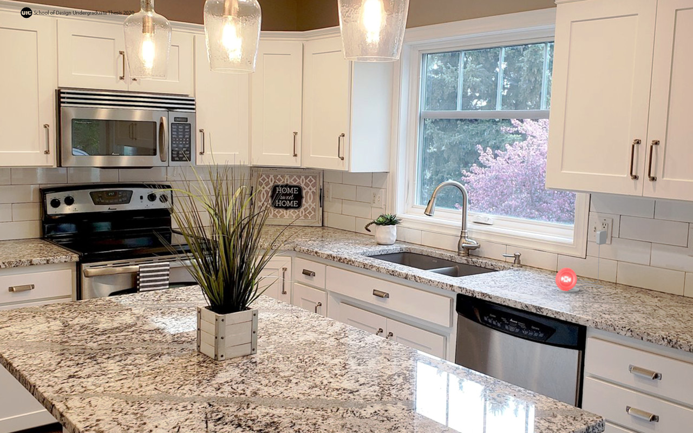
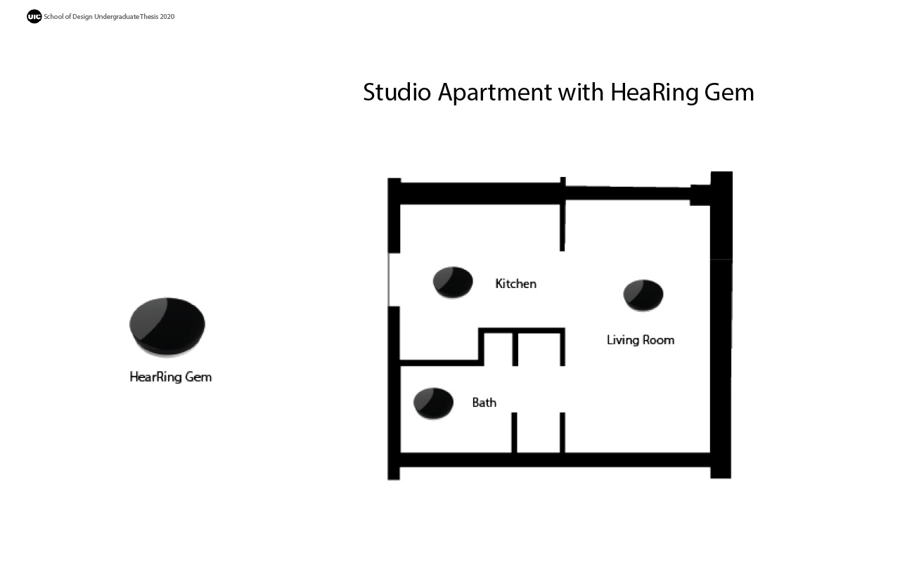
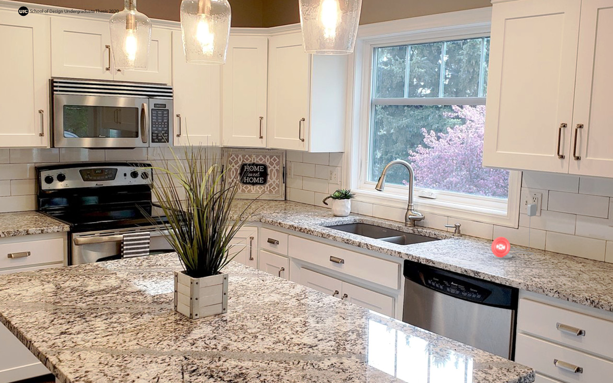
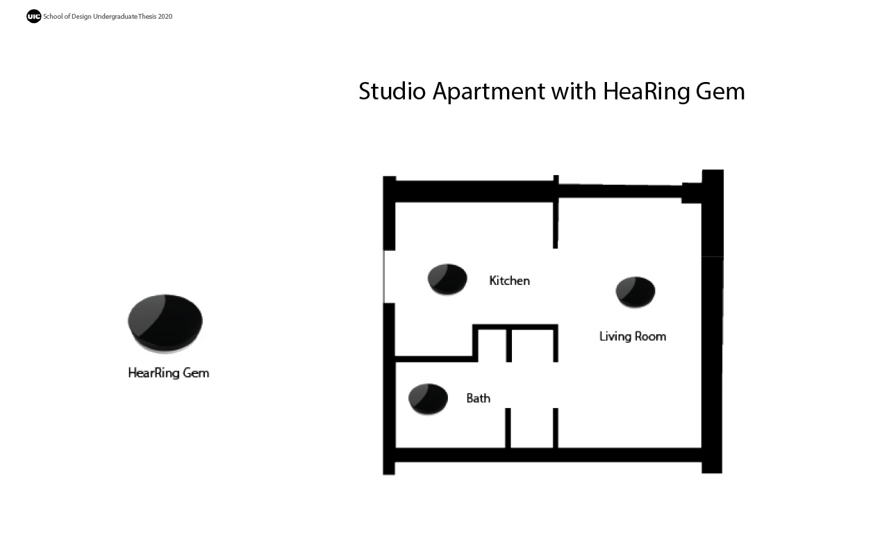

2020 / Industrial Design / Thesis
Deaf individuals around the world struggle to stay alert and aware of their surroundings. As someone who is deaf in my left ear, I wanted to create a device that would assist deaf individuals by alerting them of sounds nearby. I wanted this device to be placed in homes and was inspired by how stoplights alert cars using LED lights. I also wanted the device to be carried, which encouraged me to design the HearRing Gem to be smooth to touch and small enough to carry in a pocket.
Deaf individuals around the world struggle to stay alert and aware of their surroundings. As someone who is deaf in my left ear, I wanted to create a device that would assist deaf individuals by alerting them of sounds nearby. I wanted this device to be placed in homes and was inspired by how stoplights alert cars using LED lights. I also wanted the device to be carried, which encouraged me to design the HearRing Gem to be smooth to touch and small enough to carry in a pocket.

The HearRing Gem is a device that alerts the deaf of sounds within their home.

 





Control the way you recieve alerts through customizable options that are controlled through the HearRing app. The HearRing gem displays icons, flashes and vibrates based on what you need for your home.


The HearRing Gem is a device that alerts the deaf of sounds within their home.
Control the way you recieve alerts through customizable options that are controlled through the HearRing app. The HearRing gem displays icons, flashes and vibrates based on what you need for your home.